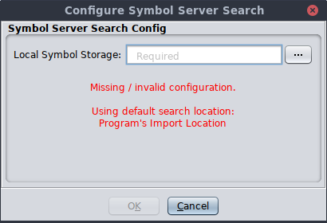
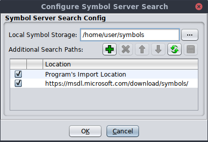
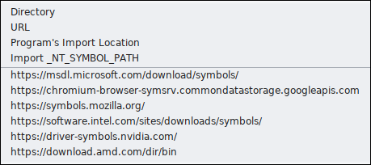

Symbol Server Config
Allows the user to configure the location where PDB symbol files are stored and additional locations to search for existing PDB files.
Steps:
- Invoke Edit → Symbol Server Config
- The Local Symbol Storage location is required to be able to search. If missing, set it to a directory where Ghidra can store PDB files.
- For example,
/home/your_id/SymbolsorC:\Users\your_name\Symbols.- If the location is a new empty directory, the user will be prompted to initialize the directory as a Microsoft symbol storage directory.
- Add additional search locations by clicking the button.
- Save any changes to the configuration by clicking the button.
- Search locations can be disabled by toggling the enabled checkbox at the beginning of the row.
- A typical configuration:
(Add)
Allows the user to add a location to the search path list. Pick from the offered types of locations, or pick a predefined location.

- Directory - allows the user to pick an existing directory that will be searched for symbol files. See level 1/level 2 or unorganized directory descriptions.
- URL - allows the user to enter a HTTP or HTTPS URL to a web-based symbol server.
- Program's Import Location - automatically references the directory from which the program was imported.
- Import _NT_SYMBOL_PATH - parses the current value of the
_NT_SYMBOL_PATHsystem environment variable to extract URLs and symbol directory locations to be added to the Ghidra configuration. If no environment value is present, the user can paste their own value into the text field.All items listed after the menu dividing line are automatically added from resource files that have a
*.pdburlextension. The default file included with Ghidra is calledPDB_SYMBOL_SERVER_URLS.pdburland is located in theGhidra/Configurations/Public_Release/datadirectory under the Ghidra install directory.(Delete)
Deletes the currently selected locations from the Additional Search Paths table.
(Up/Down)
Moves the currently selected item up or down in the Additional Search Paths table.
(Refresh)
Updates the status column of the locations listed in the Additional Search Paths table. Symbol servers or storage locations that are unreachable or misconfigured will show an error status in that column.
(Save)
Saves the currently displayed search and storage locations to the preferences file. This is shared between all Ghidra tools.